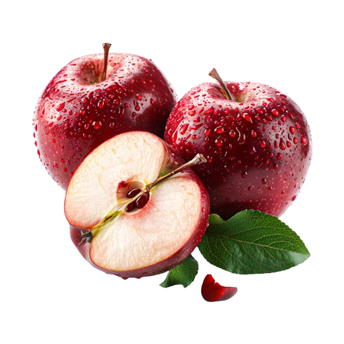
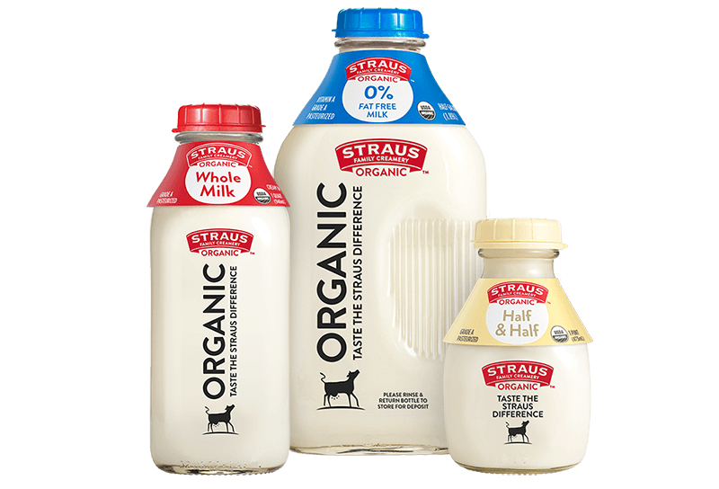
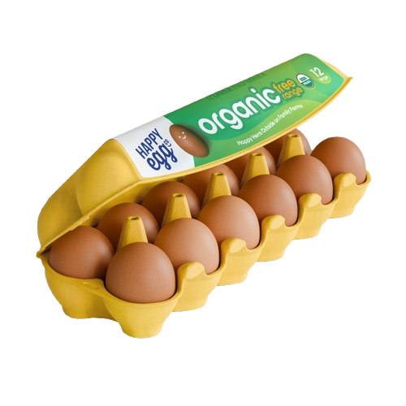
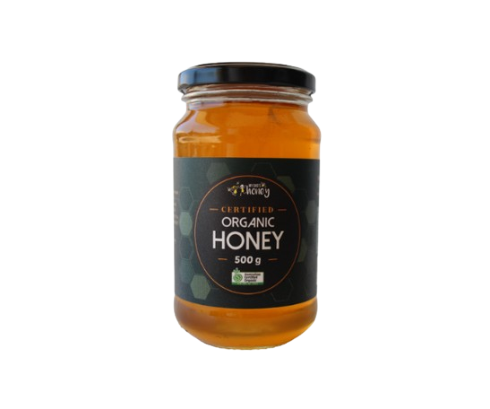

Our Organic Products
Our store offers a variety of frish organic products that are carefully selected to ensure the best quality.
These products include fruits, vegetables, and harmful additives. They are rich in nutrients and support a healthy lifestyle for our customers.

Fresh organic apples that are naturally grown and full of vitamins.
They have a sweet tatse and are perfect for a healthy lifestyle.

Fresh organic milk that is natural and rich in calcium, perfect for a healthy lifestyle.

Fresh organic eggs from free-range chickens raised in a natural environment. They are rich in protein and nutrients, making them perfect for healthy and balanced diet.

Natural organic honey with rich taste, perfect for a healthy lifestyle and a great alternative to sugar.

Fresh organic carrots that are rich in vitamins and good for eye health.
| Product name | Category | Price | Benefits |
|---|---|---|---|
| Organic Apple | Fruits | 10 SR | vitamins |
| Organic Milk | Dairy | 15 SR | Good for bones |
| Organic Eggs | Dairy | 17 SR | high protein |
| Organic Honey | Natural products | 30 SR | gives energy, support the immune system, and is healthier than sugar. |
| Organic Carrots | Vegetables | 5 SR | grown naturally without harmful chemicals ot pesticides. They are rich in vitamins, especially vitamin A, and help support healthy vision and overall wall-being. |